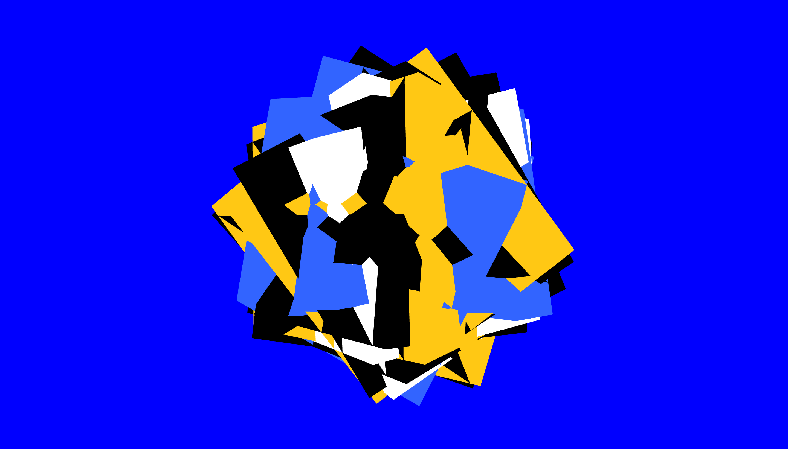

[6.5.22]Input Pierre
Notes en vrac:
1.
Shop online: fais ton personnage en choissisant tes données
Make your own adventures book
Disco Elyseum
Netflix documentary about Instagram
Time Well Spent (Tristan Harris)
https://wellbeing.google/
Discover Weekly Spotify
Rabbit Hole (NYT podcast, incroyable)
Sophie Calle (Prends soin de toi ) hehehe
2.
Qu’est ce qui se passe quand il y a des données qui manquent?
Malika Favre
Georges Perec -– La Disparition
peut etre rgearder des sculpteurs et architectes qui
travaille sur le plein / le vide (Noguchi)
citation: "un seul être vous manque et tout est dépeuplé"
http://yan.vanderme.free.fr/com/comfr.html


[13.5.22] Feedback Hanna
Datenbanken exportieren - einfache visuelle Umsetzung (direkt oder api – Ziel JSON file)
Schlaf widerspiegelt sich in der Visualisation (Bsp. Rhythmus)
Idee: mehrere Nächte sind visualisiert, nur eine in Decke umgesetzt
Zoom/Fokus: 1 Jahr – 1 Monat – 1 Woche – 1 Nacht (Frage der Zeitachse)
Salome Rinderknecht TX hslu – generierte Babydecke
Nike Zach Liberman – Marathon durch Sensoren im Schuh visualisieren (data art)
Variantenreichtum der Daten und der Parametrisierung vs.
Einheit der Technik der Strickmaschine
Musikvisualisierungen als Inspiration, experimentelle Musiknotation
Decke ist kein Muss – kann auch anderer Schlafgegenstand/Lied sein (Schlaf Recherche)
alles kann in alles übersetzt werden


[17.5.22]Feedback Zwischenpräsi:
+ vom Schlafen auszugehen
+ Brücke zum Schlaf machen, indem am Ende ein "Gegenstand" erschaffen wird
+ bereits mit p5 angefangen
+ historisch Stricken mit Computer verbunden
> visuelle Recherche über Schlaf und Nacht machen (Gedichte, Bilder anschauen)
> kulturelle Bedeutung Schlaf?
> Nochmals Zeit nehmen um Endprodukt zu bestimmen. Gibt es eventuell auch etwas, dass emotional mehr Wert hat?
> Daten in Musik umwandeln? (Schlaflied)
> Lernen wie Daten (von FitBit) erstellt/erfasst werden
> Beziehung Schlaf-Maschine - Wir schlafen die Maschine arbeitet, in dem sie die Daten erfässt
> Interessante Möglichkeit: Handgezeichnete Illustrationen mit generischer Gestaltung mixen
> API FitBit
[17.5.22] Fokus auf Träume:
Wann träumen wir -> in Rem Phasen
Anzahl Rem-Phasen = Verdichtung Träume
Wie können wir anhand der Daten die wir haben Traum aufzeigen?
Verschiedene Formen in Kombination mit Gui
Abklärung TX:
Stricken ok mit Caroline, Termin nächste Woche
Einführung inkjet am 25.5. 9:00 Uhr TX

[19.5.22] Wie weiter?
Daten in Mengen einteilen und nicht Diagram
Raster im Hintergrund?
Neue Tabelle nutzen (sleep_score 2/deep_sleep_in_minutes)
Overall Score ebenfalls interessant; Einteilung 1-100
restlessness: Zusammensetzung Aufgewacht, Herzschlag und Bewegung -> Zahlen können einfach in Prozente umgewandelt werden.
[19.5.22]
Überlegen ob Grid mit drei Kanälen geht: Overall -> Sleep Score
Jeder Kanal füllt mit random oder noise die Anzahl Zellen aus,
welchem Wert es in der Tabelle entspricht
[20.5.22] Feedback Hanna, Yann, Stephanie
> Visualisation von Traum, wie wirkt ein Traum, organisch?
(input: css Effekte/Filter)
> später: Output Decke, was zeigen wir auf der Decke
(Komprimierung, Zusammenstellung von Daten)
<<<<<<< HEAD
=======
>>>>>>> 90ffd7344e5f10ae32b6778f345fe1b673f30ab8